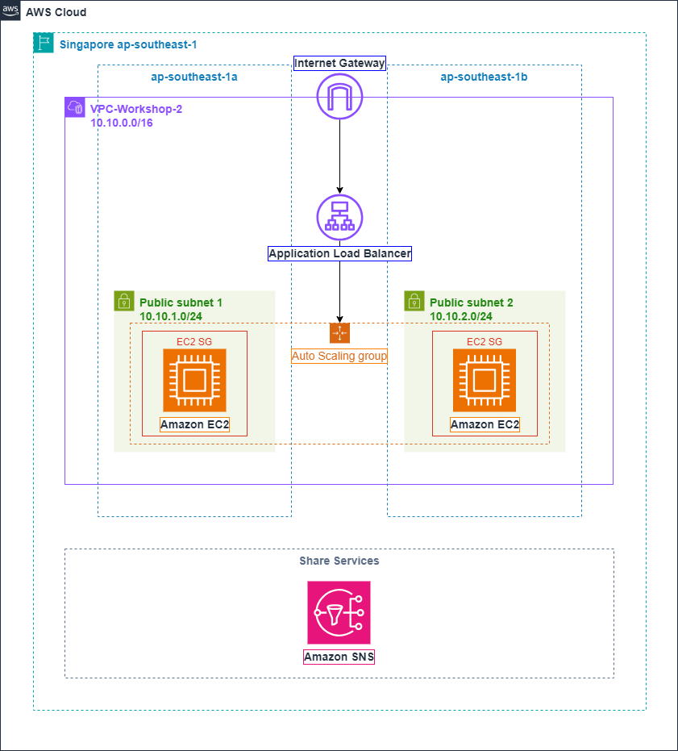

Sử dụng Terraform để cung cấp cơ sở hạ tầng trên Đám mây AWS
Tổng quan
Trong bài lab này, chúng ta sẽ học cách tiển khai một kiến trúc có độ sẵn sàng cao trên AWS sử dụng Terraform, một công cụ Cơ sở hạ tầng dưới dạng code nổi tiếng.
Kiến trúc

Trong kiến trúc này, bạn có thể thấy chúng ta có một VPC với CIDR là 10.10.0.0/16, có 2 Subnet công cộng với CIDR lần lượt là 10.10.1.0/24 và 10.10.2.0/24. Thêm vào đó, VPC còn có một Cổng kết nối Internet được đính kèm vào nó.
Trước khi chúng ta bước vào quá trình triển khai của kiến trúc của chúng ta, hãy dành một chút thời gian để hiểu các khái niệm của Auto Scaling Group, Application Load Balancer và Amazon SNS để tìm hiểu về vai trò của chúng trong việc đảm bảo độ sẵn sàng và khả năng mở rộng của ứng dụng của ta.
Chúng ta chỉ dùng thao tác tay để tạo Amazon Simple Notification Service (Amazon SNS) trên AWS Management Console hoặc AWS CLI sau khi triển khai kiến trúc sử dụng công cụ Cơ sở hạ tầng dưới dạng Code.
Application Load Balancer là gì?
Elastic Load Balancing tự động phân phối lưu lượng truy cập đến qua nhiều mục tiêu, các máy ảo EC2, container, và địa chỉ IP, trong một hoặc nhiều Availability Zone.
Nó theo dõi sức khỏe của các mục tiêu đã đăng ký, và chỉ điều hướng lưu lượng truy cập đến các mục tiêu khỏe mạnh.
Elastic Load Balancing mở rộng quy mô bộ cân bằng tải của bạn khi lưu lượng truy cập đến thay đổi theo thời gian.
Elastic Load Balancing hỗ trợ các loại cân bằng tải:
- Application Load Balancers
- Network Load Balancers
- Gateway Load Balancers
- Classic Load Balancers
Chúng ta sẽ tìm hiểu về Application Load Balancer.
Các thành phần của Application Load Balancer

-
Một Bộ cân bằng tải hoạt động như điển liên lạc duy nhất với khách hàng. Bộ cân bằng tải phân phối lưu lượng truy cập ứng dụng đến từ nhiều mục tiêu, như các máy ảo EC2, trong nhiều AZ. Điều này tăng khả năng sẵn có của ứng dụng bạn.
-
Một listener kiểm tra yêu cầu kết nối từ khách hàng, sử dụng giao thức và cổng mà bạn cấu hình.
-
Mỗi target group điều hướng yêu cầu đến một hoặc nhiều mục tiêu đã đăng ký, như các máy ảo EC2, sử dụng giao thức và số cổng mà bạn chỉ định.
Auto Scaling Group là gì?
-
Amazon EC2 Auto Scaling giúp bạn đảm bảo rằng bạn có được chính xác số lượng máy ảo EC2 có sẵn để xử lý tải cho ứng dụng của mình.
-
Bạn tạo một nhóm các máy ảo EC2, gọi là Auto Scaling Groups.
-
Với Auto Scaling Groups, bạn có thể chỉ định số lượng tối đa/tối thiểu các máy ảo tromg mỗi Auto Scaling Groups, và Amazon EC2 Auto Scaling đảm bảo rằng các nhóm máy chủ ảo của bạn sẽ không bao giờ vượt quá/ít hơn kích thước này.

Các lợi ích của Auto Scaling
Việc thêm Amazon EC2 Auto Scaling vào kiến trúc ứng dụng của bạn là một cách để tối đa hoá lợi ích của đám mây AWS .
-
Khả năng chịu lỗi: Amazon EC2 Auto Scaling có thể phát hiện khi một máy ảo không hoạt động tốt, tắt nó, và khởi chạy một máy chủ ảo mới để thay thế.
-
Khả năng sẵn có: Amazon EC2 Auto Scaling giúp đảm bảo rằng ứng dụng của bạn luôn luôn có đủ khả năng xử lý để đáp ứng nhu cầu lưu lượng truy cập hiện tại.
-
Quản lý chi phí: Amazon EC2 Auto Scaling có thể tăng hoặc giảm khả năng xử lý một cách linh hoạt theo nhu cầu. Bởi vì bạn chỉ trả tiền cho các thể hiện EC2 mà bạn sử dụng, bạn tiết kiệm tiền bằng cách khởi chạy thể hiện khi cần thiết và tắt chúng khi không cần thiết.
Vậy bạn có thể thấy việc tích hợp Auto Scaling group của bạn với một bộ cân bằng tải Elastic Load Balancing giúp bạn có thể thiết lập một ứng dụng cân bằng tải.
-> It will help increase the scalability and availability of your application.
Amazon Simple Notification Service
Amazon Simple Notification Service (Amazon SNS) is a managed service that provides message delivery from publishers to subscribers (also known as producers and consumers).
Với Amazon SNS, bạn có thể cấu hình Auto Scaling Group của bạn để thông báo các sự kiện quan trọng mà ảnh hưởng tới ứng dụng của bạn.
Ví dụ, nếu bạn cấu hình Auto Scaling group của bạn sử dụng loại thông báo autoscaling:EC2_INSTANCE_LAUNCH, và Auto Scaling group của bạn khởi chạy một máy ảo, điều đó sẽ gửi một thông báo email.
SNS Notifications
Amazon EC2 Auto Scaling hỗ trợ gửi các thông báo Amazon SNS khi mà các sự kiện dưới đây xảy ra.
| Events | Description |
|---|---|
| autoscaling:EC2_INSTANCE_LAUNCH | Khởi chạy máy ảo thành công |
| autoscaling:EC2_INSTANCE_LAUNCH_ERROR | Khởi chạy máy ảo thất bại |
| autoscaling:EC2_INSTANCE_TERMINATE | Chấm dứt máy ảo thành công |
| autoscaling:EC2_INSTANCE_TERMINATE_ERROR | Chấm dứt máy ảo thất bại |
Tin nhắn bao gồm các thông tin như sau:
-
Event — Sự kiện.
-
AccountId — account ID của tài khoản AWS.
-
AutoScalingGroupName — Tên của Auto Scaling Group.
-
AutoScalingGroupARN — ARN (Amazon Resource Name) của Auto Scaling group.
-
EC2InstanceId — ID của máy ảo EC2.